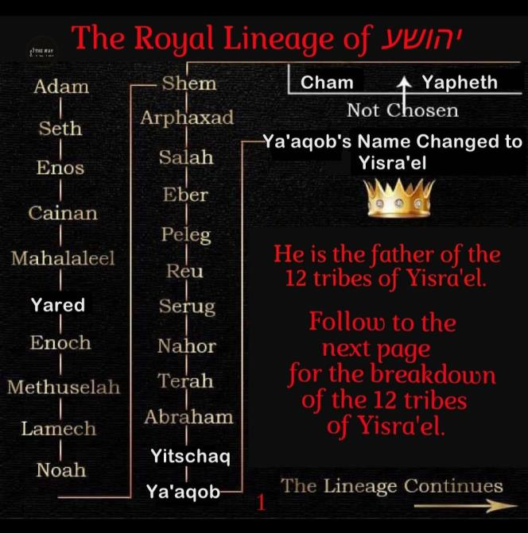
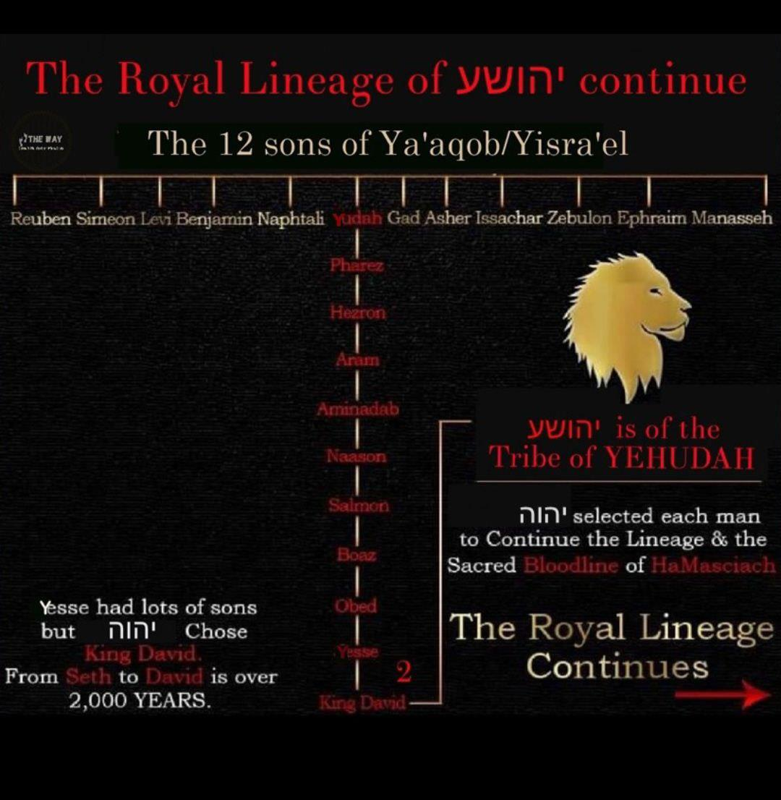
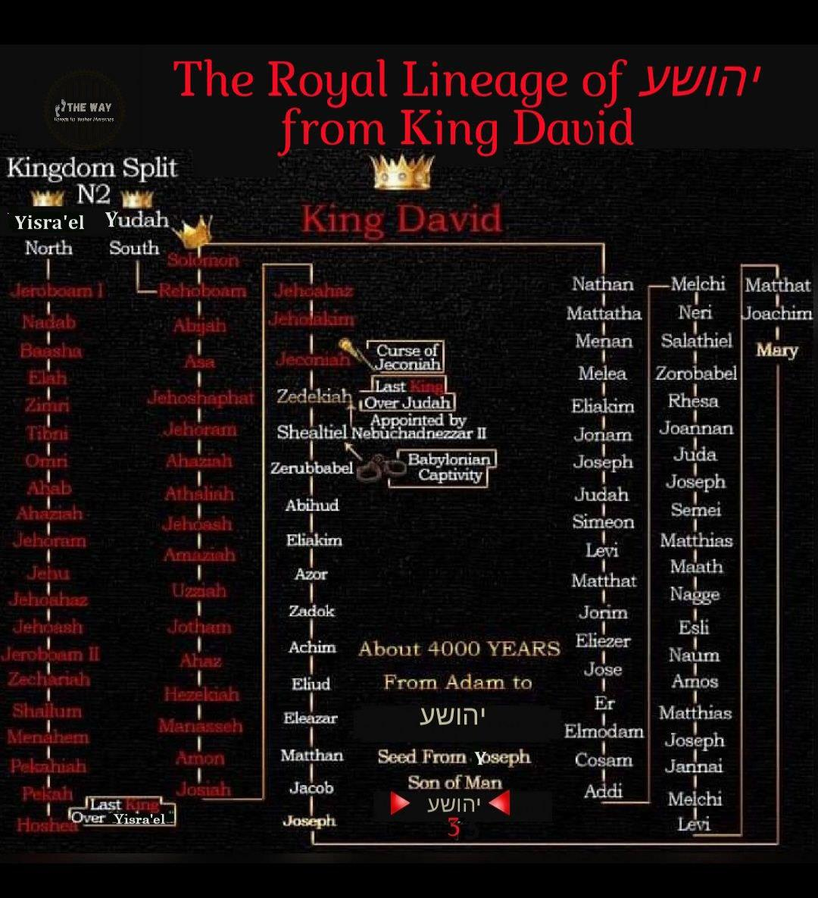
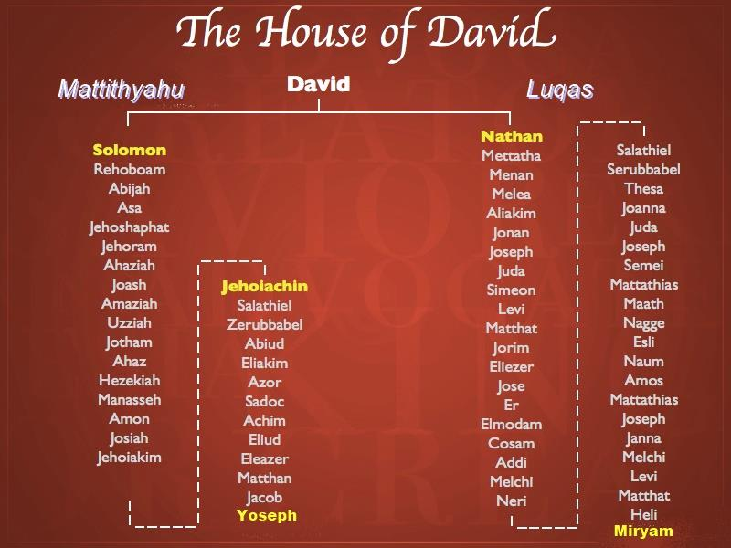

Contents



Was Yoseph, the biological father of Yahushua, born from two different fathers?
Yes!
The genealogy provided by Mattithyahu/Matthew states that Yahushua's father is Yoseph, and Yoseph's father is Ya'aqov/Jacob. Next, Luqas mentions that Yoseph is the father of Yahushua, but Yoseph's father is identified as Heli/Eli. Two distinct ancestral lines lead to David. Are there two fathers of Yoseph?
- In Mattithyahu/Matthew's account, the genealogy of Yahushua connecting him as a descendant of King Solomon is traced through his father Yoseph (Joseph) and his paternal ancestry stemming from Ya’aqov (Jacob). Establishing Yahushua's rightful claim to the throne.
- And Luqas traces Yahushua's Priestly lineage through the Priestly line of Nathan to David and on through Levi to Adam... through Yoseph´s father Eli. Establishing Yahshua´s right to High Priest. Luqas demonstrates the genealogical link between Yahushua and Adam by following the Priestly line of Nathan to David and continuing through Levi. Yoseph's father [in-law], Heli/Eli, plays a key role in the story. Validating Yahushua’s claim as the rightful High Priest.
Now, it is important for us to deepen our understanding of the expression "son of God". Besides being raised from the dead and identified as the Son of God, men are also referred to as the son of… Their forefathers made a connection to Yahushua being referred to as the Son of God by establishing his family line to Adam on both his maternal and paternal sides. Adam, referred to as "the son of God," lacks any biological parents.
Additionally, it is crucial for us to deepen our comprehension of the expression "son of man". Aside from being known as Yoseph's son, Yahushua was often referred to as the offspring of David. Keep in mind that in the past, males were referred to as the "son" of their father, paternal grandfather, great-grandfather, and so on. That is the reason why Yahushua was referred to as the SON OF MAN, along with being known as the son of Yoseph and the son of David.
Son of Man = Son of God = Birth, Blood, and Resurrection
Please be aware Luqas recounts the genealogy of Yahushua, tracing it back to Adam, whom Luqas refers to as the direct descendant of God. Notably, Adam's existence began without the presence of any earthly parents. In essence, when Yahushua referred to himself as the SON OF MAN, he essentially meant the same thing as being the SON OF GOD. Luqas supports this claim by acknowledging that Yahushua can be traced back to Heli, David, Avraham, Adam, and even יהוה Himself. Yahushua specifically addressed his critics who accused him of blasphemy for being referred to as the Son of God. He noted that he was not the initial person to be identified with this title.
So, in essence, יהוה can be seen as Yahushua's literal "father" in terms of lineage, as he is Yahushua's many great(s) grandfather through both sides of the family tree. Just as Yahushua can be referred to as the son of David, he can also be considered the son of Abraham and Adam.
The SON OF GOD by BIRTH and by BLOOD and by RESURRECTION.
Yoseph's Two Fathers
The question arises regarding how Yoseph could be identified as the father of Ya’aqov in Mattithyahu, and yet Heli/Eli as his father in Luqas.
Was their two Yosephs as some ridiculously claim thereby claiming there were two Yahushuas?
No.
The lineage found in the book of Mattithyahu/Matthew, also known as the Mattithyahu/Matthew lineage, uses the term "beget" to establish Yahushua's biological connection to the throne of David through Yoseph as proof of his rightful claim to the throne. This holds immense significance. Mattithyahu/Matthew's genealogy is specifically referring to the direct male lineage of David, clearly demonstrated through the term 'beget'. Contrary to the teachings of Catholicism/Christianity. Yoseph is far more than Yahushua's adopted father.
Luqas's lineage does not utilize the word "beget," as it traces Yahushua's ancestry back to David and ultimately Adam through his biological father Yoseph, and his ancestors by marriage through Miryam's father-in-law Eli.
Miryam's lineage was traditionally traced through males as ALL lineage was documented through a male structure, so when documenting it, they identified Miryam's father, Eli, as the presumed father of Yoseph. Eli was not the one who fathered Yahushua, it was Yoseph who did. Thus, the term "beget" was avoided as it referred to the relatives of Yahushua's father, Yoseph. Yoseph became Eli's son-in-law by marrying Miryam, although the term "father-in-law" did not exist during that time. Eli was Miryam's father. The Father of Yoseph is connected to him by means of marriage. Indeed, Yoseph was fortunate to have two fathers, namely Ya’aqov/Jacob and Heli/Eli.
The Catholic Church had the capability to provide a clearer translation but chose not to do so. Why would you engage in such actions when you represent a false religious belief, attempting to sow confusion and advocate for a pagan doctrine of a Trinity, aiming to diminish Yahushua's rightful claim as the Messiah and ultimately establish a deceitful Messiah at the end of the age?
The tracing of lineage is always done through the male. This is the reason why Miryam is not mentioned as Eli's daughter in the book of Luqas, as Eli is mentioned as the father of Yoseph. He became this through the act of getting married. The female was not mentioned at any point.
Mattithyahu/Matthew was recording the ancestral lineage of Yahushua, specifically focusing on Yoseph as his biological father, to establish his rightful claim to the Throne of David based on his lineage. Luqas was recording the evidence of Yahshua's lineage as the rightful High Priest, being descended from Miryam and Eli, who was Yoseph's father-in-law.
Both go all the way back to Adam and then to יהוה... The SON OF GOD by BIRTH, by BLOOD, by Resurrection. Certainly, the Pope known as the False Prophet attempts to convince us that Mattithyahu made numerous mistakes and is entirely incorrect, whereas only Luqas's account is accurate. Rise and shine, people who blindly follow. Yahushua, himself, educated his disciples on both lineages, from which these accounts originated, directly from the Messiah.
However, Luqas straightforwardly asserts that Yahushua instructed his disciples on both aspects, his royal Kingly lineage and did not make any corrections to it. The disciples of Yahushua accurately informed the scribe Mattithyahu about it to fulfil the prophecy regarding the lineage of David. Luqas carefully instructed about his lineage, tracing it all the way back to Adam, to affirm the prophetic fulfilment stated in Bereshit/Genesis, emphasizing his descent as "the seed of a woman".
Can we find a contradiction in the ancestry accounts of Luqas and Mattithyahu/Matthew?

Some argue that the genealogies documented in Mattithyahu/Matthew 1:1-16 and Luqas 3:23-38, which trace the ancestors up to King David, are in conflict with one another. There is a belief that both Mattithyahu and Luqas are tracing the genealogy to Yoseph, who was the earthly father of Yahushua. Despite the father of Yoseph having two different names, it is argued that this cannot be dismissed by explaining it as Mattithyahu focusing on the lineage from David and Luqas following the lineage to David. Yoseph was unable to have two fathers who were not the same. However, it is true that Yoseph had two fathers, both his biological father and his father-in-law.
In the book of Mattithyahu, the genealogy of Yahushua was documented through his biological father, Yoseph. The genealogy mentioned in the book of Mattithyahu using the words BEGET, represents the direct bloodline that can be traced back from Solomon and David, showcasing their connection to royalty, the Kingly line.
In these controversies, it is common for people to predominantly view things from their own standpoint, rather than taking into account the scriptural and historical biblical context. Another factor that complicates the comprehension of the genealogical passage in Luqas is the manner in which the original Greek text has been rendered into English. There truly exists no obscurity, nor conflict, nor lack of harmony. The current generation lacks a deep comprehension of the Biblical system of referencing, the intended meaning behind the words, and the reasoning behind their selection.
Luqas/Luqas 323And when יהושע Himself began, He was about thirty years of age, being, (as was being taught by Yahushua himself) as reckoned by law, son (in-law) of Yosěph, of Ěli
It is evident that Yahushua acknowledged and permitted the teaching of Yoseph being his biological father in order to establish his rightful claim to the Davidic throne, tracing back his lineage to King Solomon. Yahushua took no action to prevent the occurrence. However, he personally instructed his followers, who in turn passed on the knowledge to Mattithyahu the scribe. It is important for beginners to be aware that the original Greek text does not contain any parentheses.
The translators inserted those parentheses. Regrettably, they were placed in an incorrect location. Yahushua reached the age of approximately thirty, and this fact is mentioned by Luqas alongside the lineage of Miryam's father (Ya'aqov) to David through Nathan, in addition to the information provided in Mattithyahu's account. To put it differently, the verse should be composed in the following manner:
- "And Yahushua Himself began to be about thirty years of age, (which was what was taught) the son of Yoseph, which was also the son-in-law of Eli, the father of Miryam...
This statement significantly indicates that Yoseph was married to Eli's daughter and Eli happened to be the offspring of Mattithyahu. Do you notice the difference? Luqas expands on Mattithyahu's interjection, confirming it and connecting Yahushua's lineage through Miryam, which ultimately leads to David. To comprehend the genealogies presented in Mattithyahu and Luqas, it is essential to grasp both the textual context and the historical lineages traced through the male ancestors.
Therefore, it is likely that when Luqas recorded Miryam's ancestral line, he followed the usual practice of tracing it through Yoseph's father-in-law, Eli. When Yoseph and Miryam unite in marriage, they will become a single entity, with Eli being recognized as the father of Yoseph due to their marriage. This is the reason why in the book of Luqas, the term "beget" is not explicitly used to trace the lineage of Yahushua's biological father Yoseph through Yoseph's father-in-law, who is the biological father of Miryam.
According to Mattithyahu Yoseph is the biological father of Yahushua, and the biological lineage is traced through Yoseph’s biological father, Ya’aqov/Jacob. This is why the term "beget" is consistently used in Mattithyahu's lineage. The lineage is recorded in Luqas without the use of the term "beget. "
Both these listed genealogies are the same from Abraham to king David, but then thereafter they take different paths. Yahushua must be “born” or “begotton” from the Mattithyahu/Matthew genealogy because that is the Kingly line.
Keep in mind that in the book of Mattithyahu, there is an inserted phrase saying 'the husband of Miryam'. Therefore, it is suggested that Mattithyahu should be revised as such:
Mattithyahu/Matthew 116 "And Ya’aqov begat Yoseph (the husband of Miryam), of whom (Yoseph is the subject) was born Yahushua, who is called the Messiah."
Ya’aqov/Jacob was the father of Yoseph, who in turn fathered Yahushua. Removing an interjection from a sentence will not alter its meaning. Its sole purpose in the entire chapter is to certify that YOSEPH BEGET Yahushua.
The divine influence on the language in this passage ensures that there is no confusion regarding the lineage of Yahushua. It emphatically states that Ya’aqov/Jacob and Yoseph are responsible for Yahushua's genealogy, to fulfil the prophecy that Yahushua would restore the Throne of David. It is important to note that this lineage is traced through Yoseph rather than Miryam. This text clearly states that Ya’aqov/Jacob was the biological father of Yoseph, who in turn was the biological father of Yahushua. And to clarify any doubts about which Yoseph fathered Yahushua, it was stated that he is the husband of Miryam.
On the other hand, the genealogy in Luqas chapter three, which is connected to Yoseph's father-in-law, does not use the word "begat" and instead traces the lineage back to Adam. This demonstrates how this lineage encompasses the entire human family, indicating that the Messiah is the fulfilment of the promised "Seed of the Woman. " This genealogy in Luqas is also connected to David's lineage, but it follows a path through his son Nathan and then through Miryam's father, Heli/Eli. On the other hand, in the genealogy of Mattithyahu, found in the first chapter of his book, the lineage follows Solomon, who is the son of David.
In these one-of-a-kind illustrations, it is evident that there are three fathers playing a role. Yahushua was genetically connected through Miryam's father Heli to King David. Next, we have Yoseph, the son of Ya’aqov/Jacob, who establishes the biological lineage of Yahushua as the rightful heir to the Throne of David. And thus, it was revealed that Yahushua has a genuine Heavenly Father, indicating that he comes from a divine lineage and is meant to fulfil the role of High Priest.
Ma’asei/Acts 2:29-31
- "Men and brethren, let me freely speak unto you of the patriarch David, that he is both dead and buried, and his sepulcher (line through Solomon through Yoseph to Yahushua) is with us unto this day.
- Therefore being a prophet, and knowing that God had sworn with an oath to him, that of the fruit of his loins, according to the flesh (biological line), he would raise up the Messiah to sit on his throne;
- He seeing this before spake of the resurrection of the Messiah (begetting as Elohim by יהוה), that his soul was not left in hell, neither his flesh did see corruption."
So, the two family trees are comprised of Yoseph's father in Mattithyahu and Miryam's father in Luqas. Both Miryam and Yoseph can trace their ancestry back to David. In Mattithyahu chapter one, the genealogy is traced from Yoseph's biological father Ya'aqov/Jacob, passing through Solomon, who is the son of David. The lineage of kings. The lineage presented in Luqas chapter three outlines the ancestry of Miryam's father, known as "Heli. " Although Miryam herself is not explicitly mentioned in the genealogy, it can be traced back to David. However, the lineage follows a different path through David's son Nathan. In summary, according to tradition, Miryam's father must be the person included in the lineage of David when tracing their biological connection. This is the traditional format in which genealogies are recorded in the scriptures. From one generation to another, mothers are not typically recognized as patriarchal figures.
Therefore, there are no mistakes or inconsistencies present. The supposed contradiction disappears when we thoroughly analyze the scriptures and are familiar with the historical and genealogical allusions. In reality, Miryam's name would never appear in the Genealogies. In Luqas 3:33, it is explained that Yahushua's lineage can be traced back to David through his father-in-law Heli, whom he took on flesh from Miryam. This fulfilment of scripture predicts that יהוה will raise up a king from the descendant of David to rule on the throne. This seed can be traced back through the ancestors of both Yoseph and Miryam, specifically through the family lines of Nathan and Solomon.
May יהוה give us all the wisdom to discern the truth of his set-apart Word.
Clearly taught in the Word of יהוה:
Yahushua was by birth, blood, and lineage:
- -- The Son of יהוה [God]
- -- The Son of Man
- -- The Son of David
- -- The Son of Yoseph
- -- The King of Yisra’el
- -- The High Priest of Yisra’el